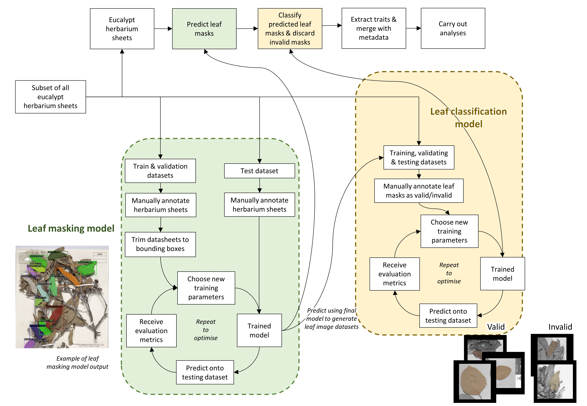

Using Machine Learning to Link Climate, Phylogeny and Leaf Area in Eucalypts Through a 50-fold Expansion of Current Leaf Trait Datasets Part 1
This is Part 1 of 2, where I briefly go through how I made my machine learning models, and what they do
To look at the source code, feel free to check out my GitHub
Introduction
My project involved three key parts:
- Prepare my data for training, validating, and testing my machine learning models
- My two machine learning models were then created with the datasets
- I used my machine learning models to make my dataset which was analysed for trends

Generating my dataset for my first model
To build a good machine learning model, I needed a well-annotated training dataset to train, optimise and evaluate my model. In my case, this was done through manual annotation of herbarium sheets (archived pressed plant images). Manual annotation is essentially me telling the machine learning model what to ‘learn’, and looked like spending hours tracing the outlines of leaves on these sheets.
The annotated datasets were then divided into three sets: the training set, the validating set, and the testing set.
Training Set: Used to train the model by showing it what pixels represented a leaf on a herbarium sheet.
Validating Set: Employed to optimise the model’s hyperparameters and ensure proper it generalises well on unseen data.
Testing Set: Used to evaluate the model’s performance and accuracy
The first model, a leaf segmentation model
This first model I created was aimed to segment leaves from herbarium sheets; to create masks of the pixels that represent each individual leaf, as in This process involved a cycle of optimisation. First, feed in the training and validating dataset with initial training parameters. These parameters shaped how the model learnt. Then, evaluate the quality of the first iteration of the model.
This step involved both qualitative and quantitative metrics. Qualitative metrics were looking at all the predicted herbarium sheets, like in Figure 2, and judging how it went. Did it do poorly on small leaves? Worse on broken leaves? And, so forth. Using these metrics I judged what needed to be amended in the training dataset for the next iteration. Similarly, quantitative metrics involved calculating values such as Precision, Recall, and F1-score which are measures of true positives, false negatives, etc. that are standardised in the machine learning field. From these metrics, I then changed the training dataset the model needed to improve it for the next iteration.
Once I’ve done more painstaking labelling of the training dataset, and tweaked the training parameters, I embarked the model on the second iteration. Training a brand new model and conducting the evaluation metrics again. I kept repeating this cycle until I was satisfied with the quality of the model.

The second model, a leaf classifier model
To enhance the quality and accuracy of my workflow, I then developed a leaf classifier model. This model acted as an additional layer of filtration, classifying the output of the segmentation model into valid and invalid leaves.
Using the segmented leaf images generated by the first model, I manually annotated the images to create the necessary datasets for training, validating, and testing the leaf classifier model. Here, manual annotation involved me categorising leaf images generated by the first model as valid and invalid leaves. Then, like before, separating those images into the three datasets.
Once again, the creation of this model involved optimisation. Iterations of this machine learning model was crucial in ensuring the model was of apt quality and could accurately identify valid leaves.
 Valid leaf |
 Invalid leaf |
Applying the models to generate a massive dataset
After being satisfied with both models, I applied them to the remaining herbarium images. This process generated a massive dataset, comprising of approximately 130,000 data points. The size of this dataset was 50 times larger than the previous datasets. This gave me an amazing framework where I could ask so many more questions during the analysis. It greatly expanded the sampling done at both a taxonomic level (inter- and intra- specific sampling), and at a spatial scale across Australia, to a degree not done before.
Analysing the dataset
The final step in my project involved analysing the massive dataset created by the machine learning models. This dataset contained detailed information about the leaves, including their leaf area, leaf curvature and the size of the largest in-circle. As each herbarium sheet had their collection latitude and longitude I could then map it to climate, and see how the leaf traits changed across various variables. Furthermore, with their indepth taxonomic sampling, for the first time in literature, I explored how the leaf trait varied across the eucalypt taxonomy.
For a detailed analysis of the trends and patterns discovered in the dataset, check out my next blog post, where I share my novel findings and pretty graphs.